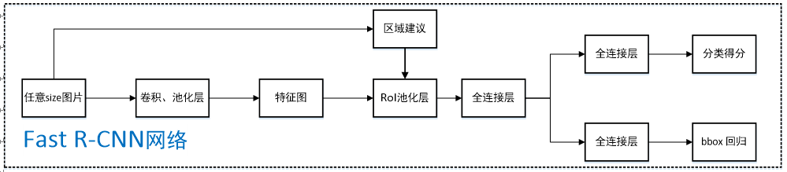

Fast-RCNN
回顾RCNN
RCNN网络的不足：
- 在RCNN网络的训练和测试都很慢，因为每一张图片都需要先经过selective search去选择约2k个候选框（而且这些候选框很多都是重叠的），然后再对候选框通过CNN网络进行特征提取，这个过程是很冗余的，因为相当于我们对很多重复的区域进行了特征提取。
- 其次我们在训练的时候步骤非常繁琐。不仅仅是CNN的特征提取，还有SVM的分类器（20个），Bounding Box的回归器（20个）需要训练。同时在训练分类器和回归器的是，特征都需要存储在本地，占用大量的存储空间
Fast-RCNN
那么作为RCNN的改进型，Fast-RCNN是如何改进上述的不足呢？先来看看FRCNN网络的结构:

网络的整个流程：
- 对于一张图片，在输入到CNN网络获得特征图的同时，也在原图上进行selective search获得候选区域。
- 根据原图和特征图的映射，把候选区域在原图上的坐标映射到特征图上的坐标，再将特征图上的候选区域输入RoI池化层中池化到一个固定的大小$H \times W$
- 将RoI的输出（$H \times W$的候选区域）输入全连接层，得到固定大小的特征向量
- 第3步所得特征向量经由各自的全连接层【由SVD分解实现】，分别得到两个输出向量：一个是softmax的分类得分，一个是Bounding-box窗口回归
- 利用窗口得分分别对每一类物体进行NMS剔除重叠建议框，最终得到每个类别中回归修正后的得分最高的窗口
下面来对流程做一些解释：
如何把候选区域从原图上的坐标转换到由原图生成的特征图上的坐标？
假设我们的对候选区域的定义和RCNN一样，也就是中心点坐标加宽高。宽高的转换很好理解，可以直接套用公式$\left[\frac{(W-F+1)}{S}\right]$得到。坐标其实也一样，可以把中心点的坐标理解为中心点到原点的宽高距离，同样代入公式就可以得到。
为什么要使用RoI池化层？
因为对于网络中的全连接层来说，输入的维度是固定的。但是作为输入的候选区域的大小却不是固定，而CNN对输入大小也没有限制，所以最后不同大小的候选区域输出的维数也不一样。而RoI池化层的作用就是输入不同大小的候选区域，输出同样维数的特征。同时，有了RoI池化层后，我们也不再需要对输入的图片进行统一的resize，减少了这方面的误差。
RoI池化层的具体操作是什么？
RoI池化层的输入是原图生成的特征图和候选区域。首先我们把候选区域从原图映射到特征图上，然后再根据我们需要输出的维度N(也就是全连接层输入的维度)把特征图上的候选区域分成N块区域，最后对这N块区域分别进行max pooling操作。这样无论输入的大小是多少，最终输出的维度是一定的。
为什么要对最后的全连接层使用SVD分解？
因为为了检测，要处理的RoI的数量很大，并且接近一半的正向传递时间用于计算全连接层。大的全连接层容易通过用SVD压缩来加速。我们假设全连接层输入数据为$x$,输出为$y$,参数为$W^{u\times v}$,那么全连接层的计算为
复杂度为$u \times v$
而如果进行SVD分解，用前t个特征值进行近似的：
其中$U$是$u \times t$的矩阵，包括$W$的前t个左奇异向量，$\Sigma_{t}$是一个$t \times t$的对角矩阵，包括$W$的前t个奇异值。V是一个$v\times t$的矩阵，包括W的前t个右奇异向量。SVD将参数计数从$u\times v$减少到$t(u+v)$个，如果$t$远小于$min(u,v)$，那么就可以大大减少复杂度。在实现时，相当于把一个全连接层拆分为两个全连接层，第一个全连接层不含偏置，使用$\Sigma_{t} V^{T}$权重矩阵，第二个全连接层含偏置，使用$U$矩阵
一些分析
1.FRCNN网络的分类和回归损失函数？
Fast R-CNN网络分类损失和回归损失如下图所示【仅针对一个RoI即一类物体说明】，黄色框表示训练数据，绿色框表示输入目标：

- cls_score层用于分类，输出K+1维数组p，表示属于K类物体和背景的概率；
- bbox_predict层用于调整候选区域位置，输出4*K维数组，也就是说对于每个类别都会训练一个单独的回归器；
- loss_cls层评估分类代价，由真实分类u对应的概率决定：$L_{c l s}(p, u)=-\log p_{u}$
- loss_bbox评估回归损失代价，比较真实分类u对应的预测平移缩放参数$t^{u}=\left(t_{x}^{u}, t_{y}^{u}, t_{w}^{u}, t_{h}^{u}\right)$和真实平移缩放参数$\boldsymbol{v}=\left(v_{x}, v_{y}, v_{w}, v_{h}\right)$的差距：
smooth L1损失函数曲线如下图所示，相比于L2损失函数，其对离群点、异常值不敏感，可控制梯度的量级
结合分类损失和回归损失，Fast R-CNN微调阶段总的损失函数为：
约定u=0为背景分类，那么[u≥1] 函数表示背景候选区域即负样本不参与回归损失，不需要对候选区域进行回归操作；
λ 控制分类损失和回归损失的平衡
2.RoI池化层如何进行反向求导训练？
首先看普通max pooling层如何求导，设$x_{i}$为输入层节点，$y_{i}$为输出层节点，那么损失函数L对输入层节点$x_{i}$的梯度为：
其中判决函数$\{\delta(i, j)$表示输入i节点是否被输出j节点选为最大值输出。不被选中【$\delta(i, j)=$ false】有两种可能：$x_{i}$不在$y_{i}$范围内，或者$x_{i}$不是最大值。若选中【$\delta(i, j)=$true 】则由链式规则可知损失函数L相对$x_{i}$的梯度等于损失函数L相对$y_{i}$的梯度×（yiyi对xixi的梯度->恒等于1）
对于RoI max pooling层，设$x_{i}$为输入层的节点，$y_{ri}$ 为第r个候选区域的第j个输出节点，一个输入节点可能和多个输出节点相关连，如下图所示，输入节点7和两个候选区域输出节点相关连
输入节点7的反向传播如下图所示。对于不同候选区域，节点7都存在梯度，所以反向传播中损失函数L对输入层节点$x_{i}$的梯度为损失函数L对各个有可能的候选区域r【$x_{i}$被候选区域r的第j个输出节点选为最大值 】输出$y_{ri}$梯度的累加，具体如下公式所示：
判决函数$\left[i=i^{*}(r, j)\right]$表示i节点是否被候选区域r的第j个输出节点选为最大值输出，若是，则由链式规则可知损失函数L相对$x_{i}$的梯度等于损失函数L相对$y_{ri}$的梯度×（$y_{ri}$对$x_{i}$的梯度->恒等于1)，上图已然解释该输入节点可能会和不同的$y_{ri}$有关系，故损失函数L相对$x_{i}$的梯度为求和形式。
参考资料：